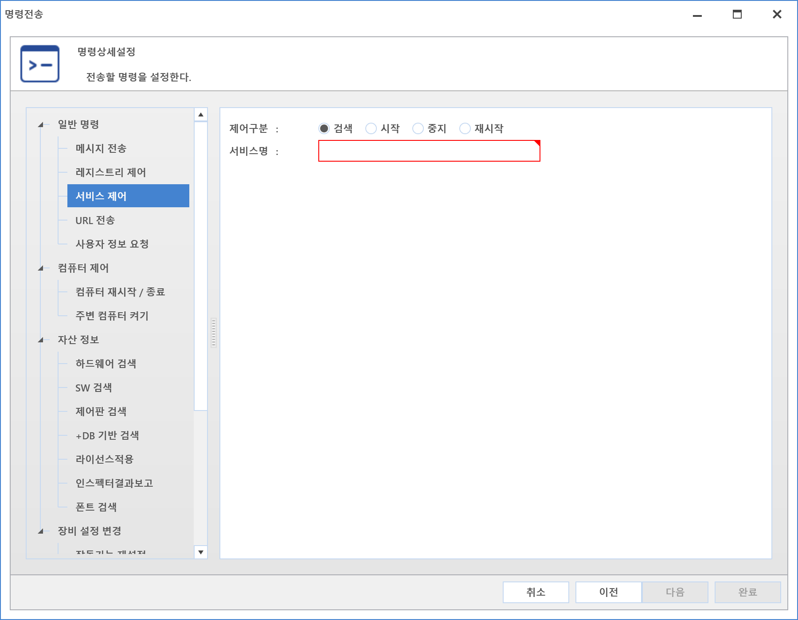
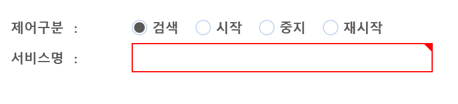

10-4-1-3. 서비스 제어
10-4-1-3. 서비스 제어
Source: https://www.sweeper.or.kr/etc/manual/10-4-1-3.html
10-4-1-3. 서비스 제어
10. 기타 ›› 10-4. 명령전송 ›› 10-4-1. 일반명령 ››


장비의 [관리도구]-[서비스] 정보를 검색하여 확인할 수 있으며, 시작/중지/재시작 등 컨트롤 할 수 있는 명령입니다.
설정방법
최초 명령 메뉴 선택에 대한 부분은 상위 목차인 [명령전송]을 확인하여 주시기 바랍니다.
-
서비스 제어를 선택합니다.
 -
서비스 제어에 필요한 설정을 합니다.
제어구분
-
검색 : 정보 존재 여부만 확인합니다.
 -
명령전송결과 "완료" : 해당 서비스 정보가 존재합니다.
-
명령전송결과 "실패" : 해당 서비스 정보가 존재하지 않습니다.
-
서비스명 : 컨트롤 대상 서비스명을 입력합니다.
-
Windows 서비스명 확인방법
-
[제어판] - [관리도구] - [서비스]를 선택합니다.

-
해당 서비스를 선택하고 마우스 우클릭하여 속성을 클릭합니다.

-
속성창이 팝업되면 서비스 이름을 확인합니다.

-
설정이 완료되면 다음버튼을 클릭합니다.
-
이후 설정내용은 [명령전송]을 확인하여 주시기 바랍니다.
참고사항
Mac Agent 는 해당 명령을 지원하지 않습니다.
© Copyright SWeeper Inc.. All Rights Reserved